# Load
library(tidyverse)
library(tidybayes)
library(rstan)
library(patchwork)
library(posterior)
library(loo)
# Drop grid lines
theme_set(
theme_gray() +
theme(panel.grid = element_blank())
)7 Ulysses’ Compass
Load the packages.
7.0.0.1 Rethinking stargazing.
7.0.0.2 Rethinking: Is AIC Bayesian?
7.1 The problem with parameters
7.1.1 More parameters (almost) always improve fit.
We’ll start off by making the data with brain size and body size for seven species.
d <- tibble(
species = c("afarensis", "africanus", "habilis", "boisei", "rudolfensis", "ergaster", "sapiens"),
brain = c(438, 452, 612, 521, 752, 871, 1350),
mass = c(37.0, 35.5, 34.5, 41.5, 55.5, 61.0, 53.5))
# What?
print(d)# A tibble: 7 × 3
species brain mass
<chr> <dbl> <dbl>
1 afarensis 438 37
2 africanus 452 35.5
3 habilis 612 34.5
4 boisei 521 41.5
5 rudolfensis 752 55.5
6 ergaster 871 61
7 sapiens 1350 53.5Here’s Figure 7.2.
d |>
ggplot(aes(x = mass, y = brain, label = species)) +
geom_point() +
geom_text(hjust = -0.2, size = 2.2, vjust = 0) +
labs(x = "body mass (kg)",
y = "brain volume (cc)",
subtitle = "Average brain volume by body mass for\nsix hominin species") +
xlim(30, 65)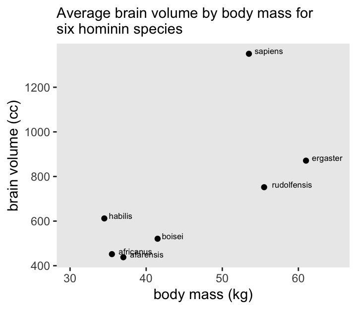
Before fitting our models, rescale a couple of the variables.
d <- d |>
mutate(mass_std = (mass - mean(mass)) / sd(mass),
brain_std = brain / max(brain))Our first statistical model will follow the form
\[ \begin{align*} \text{brain-std}_i & \sim \operatorname{Normal}(\mu_i, \sigma) \\ \mu_i & = \alpha + \beta \text{mass-std}_i \\ \alpha & \sim \operatorname{Normal}(0.5, 1) \\ \beta & \sim \operatorname{Normal}(0, 10) \\ \sigma & \sim \operatorname{Log-Normal}(0, 1). \end{align*} \]
A careful study of McElreath’s R code 7.3 will show he is modeling log_sigma, rather than \(\sigma\). We’ll consider the implications for that in the code shortly.
Part of the challenge for this section is we’ll be fitting several closely-related models. We could do that one model at a time, but that would require a lot of redundant and inefficient code. Instead, we’ll take the opportunity to show an approach that streamlines the process. But since this requires we adopt several steps we haven’t often used, we’ll spend a lot of time up front describing them one at a time. Then after the exposition, we’ll show the code for the fully developed streamlined approach.
To start, define the stan_data with the compose_data() function.
stan_data <- d |>
select(brain_std, mass_std) |>
compose_data()
# What?
str(stan_data)List of 3
$ brain_std: num [1:7(1d)] 0.324 0.335 0.453 0.386 0.557 ...
$ mass_std : num [1:7(1d)] -0.779 -0.917 -1.009 -0.367 0.917 ...
$ n : int 7Define the initial model_code_7.1.
model_code_7.1 <- '
data {
int<lower=1> n;
vector[n] brain_std;
vector[n] mass_std;
}
parameters {
real b0;
real b1;
real log_sigma;
}
model {
brain_std ~ normal(b0 + b1 * mass_std, exp(log_sigma));
b0 ~ normal(0.5, 1);
b1 ~ normal(0, 10);
log_sigma ~ normal(0, 1);
}
'Note that whereas we usually define our \(\sigma\) parameters as real<lower=0>, we have defined log_sigma as simply real. Also note that we have exp(log_sigma) in the likelihood line, which is how you put the posterior of log_sigma back on the natural zero-bounded \(\sigma\) metric.
Compile and fit this initial model with stan().
m7.1 <- stan(
data = stan_data,
model_code = model_code_7.1,
cores = 4, seed = 7)Check the summary.
print(m7.1, probs = c(0.055, 0.945))Inference for Stan model: anon_model.
4 chains, each with iter=2000; warmup=1000; thin=1;
post-warmup draws per chain=1000, total post-warmup draws=4000.
mean se_mean sd 5.5% 94.5% n_eff Rhat
b0 0.52 0.00 0.11 0.35 0.69 2032 1.00
b1 0.17 0.00 0.12 -0.02 0.35 1812 1.00
log_sigma -1.40 0.01 0.38 -1.93 -0.75 1134 1.00
lp__ 5.89 0.06 1.62 2.82 7.59 834 1.01
Samples were drawn using NUTS(diag_e) at Thu Aug 1 11:13:37 2024.
For each parameter, n_eff is a crude measure of effective sample size,
and Rhat is the potential scale reduction factor on split chains (at
convergence, Rhat=1).Here we use as_draws_df() to plot the posterior of the log_sigma, after exponentiation. For comparison, we’ll add the sample standard deviation as the red diamond.
as_draws_df(m7.1) |>
ggplot(aes(x = exp(log_sigma))) +
stat_halfeye(point_interval = median_qi, .width = 0.89, adjust = 1/4) +
annotate(geom = "point",
x = sd(d$brain_std), y = -0.05,
color = "red", shape = 18, size = 4) +
scale_y_continuous(NULL, breaks = NULL) +
coord_cartesian(xlim = c(0, 2))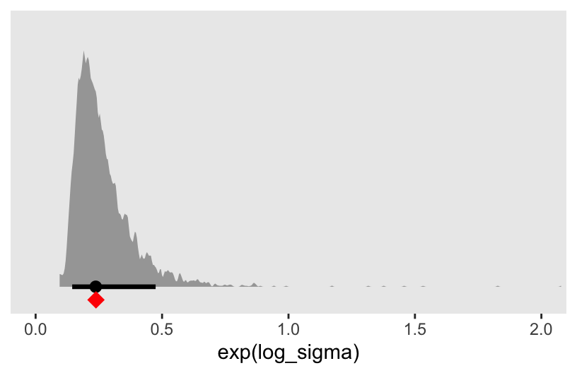
Now granted, exp(log_sigma) is the residual standard deviation, not the unconditional sample standard deviation. But the two are nevertheless somewhat comparable, and hopefully this helps clarify the log_sigma parameter.
Here’s the point estimate for the \(R^2\).
as_draws_df(m7.1) |>
expand_grid(d |>
select(species, brain_std, mass_std)) |>
mutate(mu = b0 + b1 * mass_std) |>
mutate(residual = brain_std - mu) |>
group_by(species) |>
summarise(residual = mean(residual),
brain_std = mean(brain_std)) |>
summarise(residual_var = var(residual),
outcome_var = var(brain_std)) |>
mutate(r2 = 1 - residual_var / outcome_var)# A tibble: 1 × 3
residual_var outcome_var r2
<dbl> <dbl> <dbl>
1 0.0291 0.0570 0.490This matches up closely with the book’s value of 0.477 (p. 197).
Since rstan models do not work for functions like fitted() or predict(), I’m not sure about making a general-purpose R2_is_bad() function for our models. However, we do want a method that will scale to computing \(\widehat{R^2}\) from a variety of models, and the current approach won’t work well for that since it will require different equations for mu for each model.
One way to solve this is to include a generated quantities block in the model_code, like we did for m5.4 in Section 5.1.5.1.
model_code_7.1gq <- '
data {
int<lower=1> n;
vector[n] brain_std;
vector[n] mass_std;
}
parameters {
real b0;
real b1;
real log_sigma;
}
model {
brain_std ~ normal(b0 + b1 * mass_std, exp(log_sigma));
b0 ~ normal(0.5, 1);
b1 ~ normal(0, 10);
log_sigma ~ normal(0, 1);
}
generated quantities {
vector[n] mu;
mu = b0 + b1 * mass_std; // Expected values for each case
}
'Compile and fit the second version of the model with stan().
m7.1gq <- stan(
data = stan_data,
model_code = model_code_7.1gq,
cores = 4, seed = 7)Check the summary.
print(m7.1gq, probs = c(0.055, 0.945))Inference for Stan model: anon_model.
4 chains, each with iter=2000; warmup=1000; thin=1;
post-warmup draws per chain=1000, total post-warmup draws=4000.
mean se_mean sd 5.5% 94.5% n_eff Rhat
b0 0.52 0.00 0.11 0.35 0.69 2032 1.00
b1 0.17 0.00 0.12 -0.02 0.35 1812 1.00
log_sigma -1.40 0.01 0.38 -1.93 -0.75 1134 1.00
mu[1] 0.40 0.00 0.14 0.16 0.61 1990 1.00
mu[2] 0.37 0.00 0.16 0.13 0.60 1900 1.00
mu[3] 0.36 0.00 0.16 0.10 0.60 1852 1.00
mu[4] 0.46 0.00 0.12 0.29 0.64 2036 1.00
mu[5] 0.68 0.00 0.16 0.45 0.91 1928 1.00
mu[6] 0.76 0.00 0.21 0.45 1.06 1888 1.00
mu[7] 0.65 0.00 0.14 0.44 0.85 1943 1.00
lp__ 5.89 0.06 1.62 2.82 7.59 834 1.01
Samples were drawn using NUTS(diag_e) at Thu Aug 1 11:13:42 2024.
For each parameter, n_eff is a crude measure of effective sample size,
and Rhat is the potential scale reduction factor on split chains (at
convergence, Rhat=1).Now we have a series of mu[i] posteriors in addition to the usual model parameters. These are our expected or fitted values, one for each of the 7 cases in the data set. Just to check, we can confirm these are the same as the fitted values we might compute by working pushing the observed predictor values for mass_std through the posterior distributions for b0 and b1.
# Extract the posterior draws, and make the `mu[i]` columns long
as_draws_df(m7.1gq) |>
pivot_longer(starts_with("mu"), values_to = "mu", names_to = "i") |>
mutate(i = str_extract(i, "\\d") |>
as.integer()) |>
# Add in the observed values
left_join(d |>
mutate(i = 1:n()),
by = join_by(i)) |>
# Compute the expected values by hand
mutate(fitted = b0 + b1 * mass_std) |>
# Compare the `mu[i]` values with their hand-made `fitted` counterparts
summarise(all_equal = all.equal(mu, fitted))# A tibble: 1 × 1
all_equal
<lgl>
1 TRUE Recall we can also extract the draws for the mu[i] expectations in a handy long format with spread_draws().
m7.1gq |>
spread_draws(mu[i]) |>
glimpse()Rows: 28,000
Columns: 5
Groups: i [7]
$ i <int> 1, 1, 1, 1, 1, 1, 1, 1, 1, 1, 1, 1, 1, 1, 1, 1, 1, 1, 1, 1,…
$ mu <dbl> 0.6116193, 0.3411885, 0.4582914, 0.3471304, 0.5020851, 0.46…
$ .chain <int> 1, 1, 1, 1, 1, 1, 1, 1, 1, 1, 1, 1, 1, 1, 1, 1, 1, 1, 1, 1,…
$ .iteration <int> 1, 2, 3, 4, 5, 6, 7, 8, 9, 10, 11, 12, 13, 14, 15, 16, 17, …
$ .draw <int> 1, 2, 3, 4, 5, 6, 7, 8, 9, 10, 11, 12, 13, 14, 15, 16, 17, …Thus we can use a slightly more compact spread_draws(mu[i])-based workflow to compute the point estimate for the \(R^2\) from the m7.1 model.
m7.1gq |>
spread_draws(mu[i]) |>
left_join(d |>
mutate(i = 1:n()),
by = join_by(i)) |>
mutate(residual = brain_std - mu) |>
group_by(species) |>
summarise(residual = mean(residual),
brain_std = mean(brain_std)) |>
summarise(residual_var = var(residual),
outcome_var = var(brain_std)) |>
mutate(r2 = 1 - residual_var / outcome_var)# A tibble: 1 × 3
residual_var outcome_var r2
<dbl> <dbl> <dbl>
1 0.0291 0.0570 0.490To make the fitted line-ribbons displayed in Figure 7.3, we’ll also want a streamlined way to compute those values for several model types. As a first step toward that aim, we will adopt the model.matrix() approach we introduced in Section 6.3.2.1. Here we make a model.matrix() object for the first model called mm_7.1
# Define a model matrix
mm_7.1 <- model.matrix(data = d, object = ~mass_std)
# What?
str(mm_7.1) num [1:7, 1:2] 1 1 1 1 1 ...
- attr(*, "dimnames")=List of 2
..$ : chr [1:7] "1" "2" "3" "4" ...
..$ : chr [1:2] "(Intercept)" "mass_std"
- attr(*, "assign")= int [1:2] 0 1head(mm_7.1) (Intercept) mass_std
1 1 -0.7794667
2 1 -0.9170196
3 1 -1.0087216
4 1 -0.3668079
5 1 0.9170196
6 1 1.4213804We can use this mm_7.1 object to define two new elements within compose_data(). The first will be X, the entire model matrix mm_7.1. The second will be k, the number of columns (i.e., “predictors”) in the design matrix.
stan_data <- d |>
select(brain_std, mass_std) |>
# Define `X` and `k` right in the `compose_data()` function
compose_data(X = mm_7.1,
k = ncol(mm_7.1))
# What?
str(stan_data)List of 5
$ brain_std: num [1:7(1d)] 0.324 0.335 0.453 0.386 0.557 ...
$ mass_std : num [1:7(1d)] -0.779 -0.917 -1.009 -0.367 0.917 ...
$ n : int 7
$ X : num [1:7, 1:2] 1 1 1 1 1 ...
..- attr(*, "dimnames")=List of 2
.. ..$ : chr [1:7] "1" "2" "3" "4" ...
.. ..$ : chr [1:2] "(Intercept)" "mass_std"
..- attr(*, "assign")= int [1:2] 0 1
$ k : int 2Now update the model_code to use the model.matrix() approach to for the blocks.
model_code_7.1mm <- '
data {
int<lower=1> n;
int<lower=1> k; // Number of coefficients (including intercept)
vector[n] brain_std;
matrix[n, k] X; // Regressors from the model matrix (including intercept)
}
parameters {
vector[k] b; // The beta coefficients are now defined by a vector
real log_sigma;
}
model {
brain_std ~ normal(X * b, exp(log_sigma)); // Linear model defined in matrix algebra notation Xb
b[1] ~ normal(0.5, 1); // Priors for the `b` coefficients now use `[]` indices
b[2] ~ normal(0, 10);
log_sigma ~ normal(0, 1);
}
generated quantities {
vector[n] mu;
mu = X * b; // Expected values computed with matrix algebra notation Xb
}
'Compile and fit the third version of the model with stan().
m7.1mm <- stan(
data = stan_data,
model_code = model_code_7.1mm,
cores = 4, seed = 7)Check the summary.
print(m7.1mm, probs = c(0.055, 0.945))Inference for Stan model: anon_model.
4 chains, each with iter=2000; warmup=1000; thin=1;
post-warmup draws per chain=1000, total post-warmup draws=4000.
mean se_mean sd 5.5% 94.5% n_eff Rhat
b[1] 0.53 0.00 0.11 0.36 0.69 2028 1
b[2] 0.17 0.00 0.12 -0.01 0.35 1914 1
log_sigma -1.40 0.01 0.39 -1.95 -0.72 1259 1
mu[1] 0.40 0.00 0.14 0.18 0.61 1859 1
mu[2] 0.38 0.00 0.15 0.14 0.60 1850 1
mu[3] 0.36 0.00 0.16 0.11 0.60 1846 1
mu[4] 0.47 0.00 0.12 0.29 0.64 1925 1
mu[5] 0.68 0.00 0.17 0.45 0.92 2075 1
mu[6] 0.77 0.00 0.21 0.46 1.07 2041 1
mu[7] 0.65 0.00 0.15 0.44 0.87 2085 1
lp__ 5.87 0.05 1.64 2.85 7.59 949 1
Samples were drawn using NUTS(diag_e) at Thu Aug 1 11:13:47 2024.
For each parameter, n_eff is a crude measure of effective sample size,
and Rhat is the potential scale reduction factor on split chains (at
convergence, Rhat=1).The results are within HMC simulation variance to the ones from the previous version of the model, m7.1gq. But now the input elements in the various blocks of the model_code are general enough they will scale to models with different predictors.
As a last step, we’ll add another model.matrix() element to the stan_data to support the fitted lines for the six models displayed in Figure 7.3. To make a smooth line and 89%-CI ribbon for each model, we’ll need a way to feed in a tight sequence of body-mass values into each of the models. We here define those values in a data frame called d_pred.
d_pred <- data.frame(mass_std = seq(from = -2, to = 2, length.out = 100))
# What?
glimpse(d_pred)Rows: 100
Columns: 1
$ mass_std <dbl> -2.000000, -1.959596, -1.919192, -1.878788, -1.838384, -1.797…Now we have our sequence of predictor values in d_pred, we can add them to the stan_data via the model.matrix() function. Within the stan_data, we’ll call this new matrix Xpred. Here’s what that looks like.
stan_data <- d |>
select(brain_std, mass_std) |>
compose_data(X = mm_7.1,
# This line is new
Xpred = model.matrix(data = d_pred, object = ~mass_std),
k = ncol(mm_7.1))
# What?
str(stan_data)List of 6
$ brain_std: num [1:7(1d)] 0.324 0.335 0.453 0.386 0.557 ...
$ mass_std : num [1:7(1d)] -0.779 -0.917 -1.009 -0.367 0.917 ...
$ n : int 7
$ X : num [1:7, 1:2] 1 1 1 1 1 ...
..- attr(*, "dimnames")=List of 2
.. ..$ : chr [1:7] "1" "2" "3" "4" ...
.. ..$ : chr [1:2] "(Intercept)" "mass_std"
..- attr(*, "assign")= int [1:2] 0 1
$ Xpred : num [1:100, 1:2] 1 1 1 1 1 1 1 1 1 1 ...
..- attr(*, "dimnames")=List of 2
.. ..$ : chr [1:100] "1" "2" "3" "4" ...
.. ..$ : chr [1:2] "(Intercept)" "mass_std"
..- attr(*, "assign")= int [1:2] 0 1
$ k : int 2Now update the model_code to include 2 sections in the generated quantities block.
model_code_7.1gq2 <- '
data {
int<lower=1> n;
int<lower=1> k;
vector[n] brain_std;
matrix[n, k] X;
matrix[100, k] Xpred; // New data for fitted lines
}
parameters {
vector[k] b;
real log_sigma;
}
model {
brain_std ~ normal(X * b, exp(log_sigma));
b[1] ~ normal(0.5, 1);
b[2] ~ normal(0, 10);
log_sigma ~ normal(0, 1);
}
generated quantities {
vector[n] mu;
mu = X * b;
vector[100] fitted; // A second section for the fitted lines
fitted = Xpred * b;
}
'Compile and fit the final version of the model with stan().
m7.1gq2 <- stan(
data = stan_data,
model_code = model_code_7.1gq2,
cores = 4, seed = 7)Check the summary.
print(m7.1gq2, probs = c(0.055, 0.945))I’m suppressing the print() output for the sake of space. Now it contains an additional 100 rows for the new fitted[b] values. But if you’re following along with code on your computer, do give that output a look.
Here’s how to showcase those fitted[b] values in a plot.
# Compute R2 and save as a data frame
d_r2 <- m7.1gq2 |>
spread_draws(mu[i]) |>
left_join(d |>
mutate(i = 1:n()),
by = join_by(i)) |>
mutate(residual = brain_std - mu) |>
group_by(species) |>
summarise(residual = mean(residual),
brain_std = mean(brain_std)) |>
summarise(residual_var = var(residual),
outcome_var = var(brain_std)) |>
transmute(r2 = str_c("widehat(italic(R)^2)==", round(1 - residual_var / outcome_var, digits = 2)),
mass = min(d$mass),
brain = max(d$brain))
# Start wrangling the `fitted[]` draws for the plot
m7.1gq2 |>
spread_draws(fitted[row]) |>
# Convert the fitted values back to the `brain` metric
mutate(brain = fitted * max(d$brain)) |>
# Join the `d_pred` data
left_join(d_pred |>
mutate(row = 1:n()),
by = join_by(row)) |>
# Convert the `mass_std` values back to the `mass` metric
mutate(mass = mass_std * sd(d$mass) + mean(d$mass)) |>
# Plot!
ggplot(aes(x = mass, y = brain)) +
stat_lineribbon(point_interval = mean_qi, .width = c(0.67, 0.89),
color = "lightblue4", linewidth = 2/3) +
geom_point(data = d) +
# Add in the R2 estimate
geom_text(data = d_r2,
aes(label = r2),
hjust = 0, parse = TRUE) +
scale_x_continuous("body mass (kg)", breaks = c(35, 47, 60)) +
scale_y_continuous("brain volume (cc)", breaks = c(450, 900, 1300)) +
scale_fill_manual(values = c("lightblue1", "lightblue2")) +
coord_cartesian(xlim = c(32, 63),
ylim = c(400, 1400))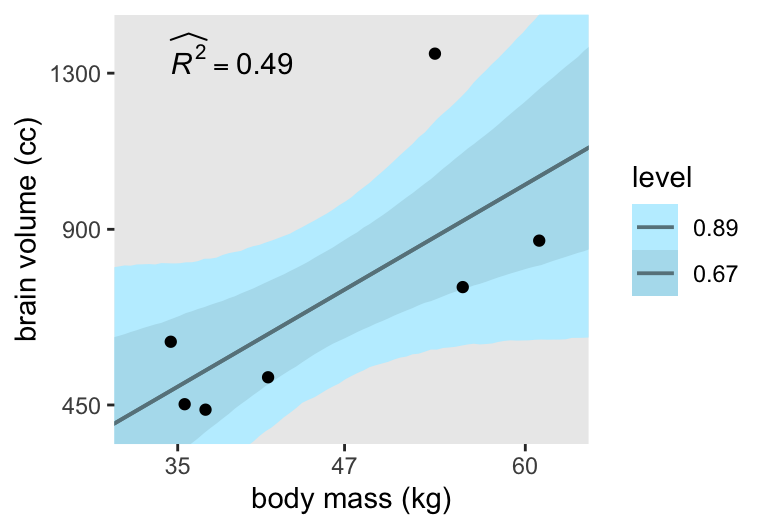
Consistent with my brms translation, the models fit with stan() consistently show wider 89% intervals than the ones McElreath showed fit with quap() in this part of the text. However, the stan()-based 67% intervals are pretty close to the intervals displayed in Figure 7.3 in the text, so we’ll show both for the plots to come.
Now we have a workflow that supports fitting, summarizing, and plotting the first linear model and it’s curvier variants, we’re ready to work in bulk.
First, we update both the d and d_pred data frames to include mass_std1 through mass_std6.
d <- d |>
mutate(mass_std1 = mass_std,
mass_std2 = mass_std^2,
mass_std3 = mass_std^3,
mass_std4 = mass_std^4,
mass_std5 = mass_std^5,
mass_std6 = mass_std^6)
d_pred <- data.frame(mass_std1 = seq(from = -2, to = 2, length.out = 100)) |>
mutate(mass_std2 = mass_std1^2,
mass_std3 = mass_std1^3,
mass_std4 = mass_std1^4,
mass_std5 = mass_std1^5,
mass_std6 = mass_std1^6)
# What?
glimpse(d)Rows: 7
Columns: 11
$ species <chr> "afarensis", "africanus", "habilis", "boisei", "rudolfensis"…
$ brain <dbl> 438, 452, 612, 521, 752, 871, 1350
$ mass <dbl> 37.0, 35.5, 34.5, 41.5, 55.5, 61.0, 53.5
$ mass_std <dbl> -0.7794667, -0.9170196, -1.0087216, -0.3668079, 0.9170196, 1…
$ brain_std <dbl> 0.3244444, 0.3348148, 0.4533333, 0.3859259, 0.5570370, 0.645…
$ mass_std1 <dbl> -0.7794667, -0.9170196, -1.0087216, -0.3668079, 0.9170196, 1…
$ mass_std2 <dbl> 0.6075683, 0.8409250, 1.0175193, 0.1345480, 0.8409250, 2.020…
$ mass_std3 <dbl> -0.47357927, -0.77114476, -1.02639367, -0.04935326, 0.771144…
$ mass_std4 <dbl> 0.36913927, 0.70715489, 1.03534547, 0.01810317, 0.70715489, …
$ mass_std5 <dbl> -0.287731766, -0.648474917, -1.044375339, -0.006640383, 0.64…
$ mass_std6 <dbl> 0.224277328, 0.594664234, 1.053483965, 0.002435745, 0.594664…glimpse(d_pred)Rows: 100
Columns: 6
$ mass_std1 <dbl> -2.000000, -1.959596, -1.919192, -1.878788, -1.838384, -1.79…
$ mass_std2 <dbl> 4.000000, 3.840016, 3.683298, 3.529844, 3.379655, 3.232731, …
$ mass_std3 <dbl> -8.000000, -7.524880, -7.068955, -6.631828, -6.213103, -5.81…
$ mass_std4 <dbl> 16.000000, 14.745725, 13.566681, 12.459798, 11.422069, 10.45…
$ mass_std5 <dbl> -32.000000, -28.895664, -26.037065, -23.409317, -20.998147, …
$ mass_std6 <dbl> 64.0000000, 56.6238262, 49.9701253, 43.9811416, 38.6026537, …We are going to fit and store the models and their output within a nested data frame. As a first step, we’ll define the six models by their names in the name column, the number of predictors (excluding the intercept) in the predictors column, and the formulas for their model matrices in a formula column.
d_fits <- tibble(model = str_c("m7.", 1:6)) |>
mutate(predictors = str_remove(model, "m7.") |>
as.integer(),
formula = c(
~ mass_std1,
~ mass_std1 + mass_std2,
~ mass_std1 + mass_std2 + mass_std3,
~ mass_std1 + mass_std2 + mass_std3 + mass_std4,
~ mass_std1 + mass_std2 + mass_std3 + mass_std4 + mass_std5,
~ mass_std1 + mass_std2 + mass_std3 + mass_std4 + mass_std5 + mass_std6))
# What?
print(d_fits)# A tibble: 6 × 3
model predictors formula
<chr> <int> <list>
1 m7.1 1 <formula>
2 m7.2 2 <formula>
3 m7.3 3 <formula>
4 m7.4 4 <formula>
5 m7.5 5 <formula>
6 m7.6 6 <formula>Now compute the model.matrix() output for each using the formula column as input to the object argument, via the map() function, and save the contents as a nested column named mm. Then compute the d_pred data frames for each model using the numbers in the predictors column as input for subsetting the necessary columns from the external object d_pred, via map(). We save the results of that operation as a nested column named d_pred.
d_fits <- d_fits |>
mutate(mm = map(.x = formula, .f =~ model.matrix(data = d, object = .x)),
d_pred = map(.x = predictors, .f =~ d_pred |>
select(mass_std1:str_c("mass_std", .x))))
# What?
print(d_fits)# A tibble: 6 × 5
model predictors formula mm d_pred
<chr> <int> <list> <list> <list>
1 m7.1 1 <formula> <dbl [7 × 2]> <df [100 × 1]>
2 m7.2 2 <formula> <dbl [7 × 3]> <df [100 × 2]>
3 m7.3 3 <formula> <dbl [7 × 4]> <df [100 × 3]>
4 m7.4 4 <formula> <dbl [7 × 5]> <df [100 × 4]>
5 m7.5 5 <formula> <dbl [7 × 6]> <df [100 × 5]>
6 m7.6 6 <formula> <dbl [7 × 7]> <df [100 × 6]>Next we compute the stan_data using the mm, d_pred, and formula columns as input for the compose_data() and model.matrix() functions, all via the pmap() function. We save the results in a nested column named stan_data.
d_fits <- d_fits |>
mutate(stan_data = pmap(.l = list(mm, d_pred, formula),
.f =~ d |>
select(brain_std:mass_std6) |>
compose_data(X = ..1,
Xpred = model.matrix(data = ..2, object = ..3),
k = ncol(..1))))
# What?
print(d_fits)# A tibble: 6 × 6
model predictors formula mm d_pred stan_data
<chr> <int> <list> <list> <list> <list>
1 m7.1 1 <formula> <dbl [7 × 2]> <df [100 × 1]> <named list [11]>
2 m7.2 2 <formula> <dbl [7 × 3]> <df [100 × 2]> <named list [11]>
3 m7.3 3 <formula> <dbl [7 × 4]> <df [100 × 3]> <named list [11]>
4 m7.4 4 <formula> <dbl [7 × 5]> <df [100 × 4]> <named list [11]>
5 m7.5 5 <formula> <dbl [7 × 6]> <df [100 × 5]> <named list [11]>
6 m7.6 6 <formula> <dbl [7 × 7]> <df [100 × 6]> <named list [11]>Define a generic model_code for all 6 models. This is the same as the previous one with one last addition: Now we have used the syntax of b[2:k] to refer to all non-intercept \(\beta\) parameters within the model block.
model_code_7.1to6 <- '
data {
int<lower=1> n;
int<lower=1> k;
vector[n] brain_std;
matrix[n, k] X;
matrix[100, k] Xpred;
}
parameters {
vector[k] b;
real log_sigma;
}
model {
brain_std ~ normal(X * b, exp(log_sigma));
b[1] ~ normal(0.5, 1);
b[2:k] ~ normal(0, 10); // New general-purpose notation for the non-intercept `beta[k]` priors
log_sigma ~ normal(0, 1);
}
generated quantities {
vector[n] mu;
vector[100] fitted;
mu = X * b;
fitted = Xpred * b;
}
'Compile with stan_model() and save the DSO as stan_dso.
stan_dso <- stan_model(model_code = model_code_7.1to6)Now draw from the posterior distributions of all 6 models by using the sampling() function within map(), saving the results in a nested column called sampling within the d_fits data frame.
d_fits <- d_fits |>
mutate(sampling = map(.x = stan_data,
.f =~ sampling(
object = stan_dso,
data = .x,
seed = 7)))Extract the as_draws_df() output from each model with map(), saving the results in a column named as_draws_df.
d_fits <- d_fits |>
mutate(as_draws_df = map(.x = sampling, .f = as_draws_df))
# What?
d_fits |>
select(model, sampling, as_draws_df)# A tibble: 6 × 3
model sampling as_draws_df
<chr> <list> <list>
1 m7.1 <stanfit[,4,111]> <draws_df [4,000 × 114]>
2 m7.2 <stanfit[,4,112]> <draws_df [4,000 × 115]>
3 m7.3 <stanfit[,4,113]> <draws_df [4,000 × 116]>
4 m7.4 <stanfit[,4,114]> <draws_df [4,000 × 117]>
5 m7.5 <stanfit[,4,115]> <draws_df [4,000 × 118]>
6 m7.6 <stanfit[,4,116]> <draws_df [4,000 × 119]>Update the d_r2 for all models.
d_r2 <- d_fits |>
unnest(as_draws_df) |>
select(model, .draw, starts_with("mu")) |>
pivot_longer(starts_with("mu"), names_to = "i", values_to = "mu") |>
mutate(i = str_extract(i, "\\d") |>
as.integer()) |>
left_join(d |>
mutate(i = 1:n()),
by = join_by(i)) |>
mutate(residual = brain_std - mu) |>
group_by(model, species) |>
summarise(residual = mean(residual),
brain_std = mean(brain_std)) |>
summarise(residual_var = var(residual),
outcome_var = var(brain_std)) |>
transmute(model = model,
r2 = str_c("widehat(italic(R)^2)==", round(1 - residual_var / outcome_var, digits = 2)),
mass = min(d$mass),
brain = max(d$brain))
# What?
print(d_r2)# A tibble: 6 × 4
model r2 mass brain
<chr> <chr> <dbl> <dbl>
1 m7.1 widehat(italic(R)^2)==0.49 34.5 1350
2 m7.2 widehat(italic(R)^2)==0.54 34.5 1350
3 m7.3 widehat(italic(R)^2)==0.68 34.5 1350
4 m7.4 widehat(italic(R)^2)==0.8 34.5 1350
5 m7.5 widehat(italic(R)^2)==0.94 34.5 1350
6 m7.6 widehat(italic(R)^2)==0.93 34.5 1350Make the full version of Figure 7.3.
d_fits |>
select(model, as_draws_df) |>
unnest(as_draws_df) |>
select(model, .draw, starts_with("fitted")) |>
pivot_longer(starts_with("fitted"), names_to = "row") |>
mutate(row = str_extract(row, "\\d+") |> as.integer()) |>
mutate(brain = value * max(d$brain)) |>
left_join(d_pred |>
mutate(row = 1:n()),
by = join_by(row)) |>
mutate(mass = mass_std1 * sd(d$mass) + mean(d$mass)) |>
ggplot(aes(x = mass, y = brain)) +
stat_lineribbon(point_interval = mean_qi, .width = c(0.67, 0.89),
color = "lightblue4", linewidth = 2/3) +
geom_point(data = d) +
geom_text(data = d_r2,
aes(label = r2),
hjust = 0, parse = TRUE) +
scale_x_continuous("body mass (kg)", breaks = c(35, 47, 60)) +
scale_y_continuous("brain volume (cc)", breaks = c(450, 900, 1300)) +
scale_fill_manual(values = c("lightblue1", "lightblue2")) +
coord_cartesian(xlim = c(32, 63),
ylim = c(400, 1400)) +
facet_wrap(~ model)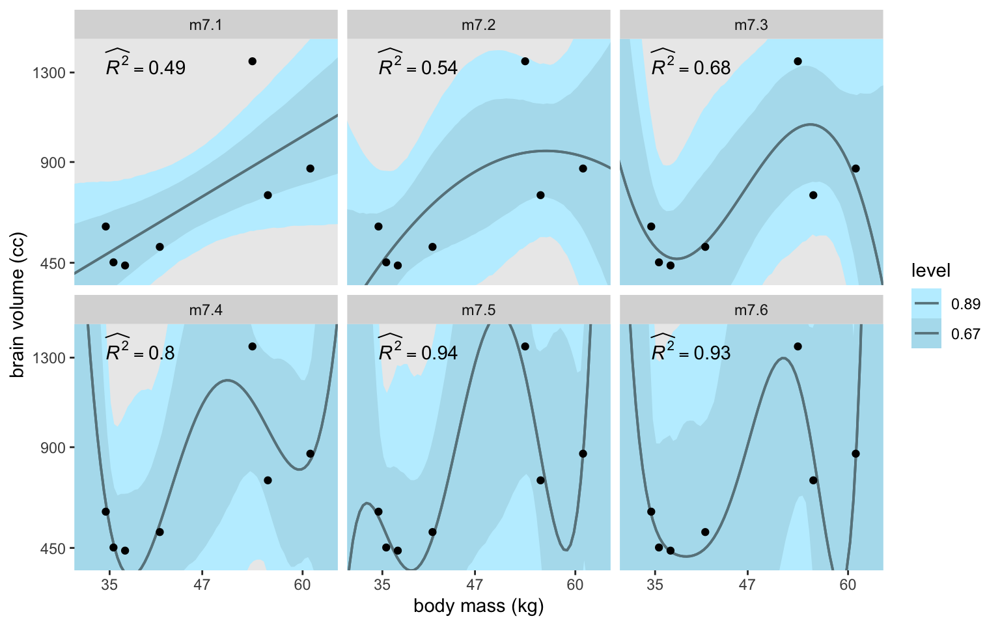
Though the fitted lines for all our models are much less certain than the quap()-based ones McElreath displayed in the text, they’re most notably so for the last model m7.6. This phenomena is connected at least in part to the increasing uncertainty in the exp(log_sigma) posterior for the models. Here they are in a plot.
d_fits |>
select(model, as_draws_df) |>
unnest(as_draws_df) |>
ggplot(aes(x = exp(log_sigma), y = model)) +
stat_halfeye(.width = 0.89) +
scale_y_discrete(NULL, expand = expansion(mult = 0.05)) +
coord_cartesian(xlim = c(0, 3))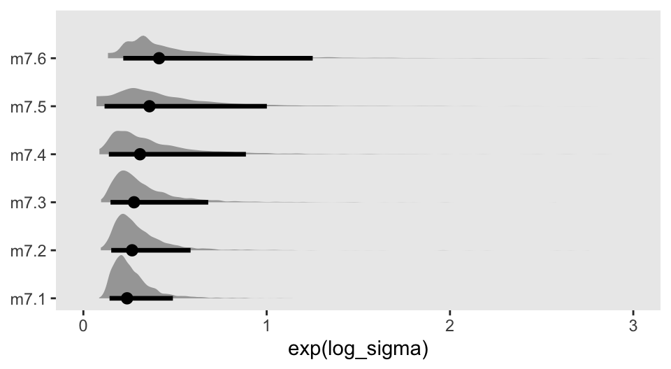
But McElreath wrote:
That last model,
m7.6, has one trick in it. The standard deviation is replaced with a constant value 0.001. (p. 198)
We can do that with stan(), too. But here we’ll abandon our bulk data frame work flow and fit this version of the model separate. First, define model_code_7.6b with \(\sigma\) fixed to a constant 0.001.
model_code_7.6b <- '
data {
int<lower=1> n;
int<lower=1> k;
vector[n] brain_std;
matrix[n, k] X;
matrix[100, k] Xpred;
}
parameters {
vector[k] b;
}
model {
brain_std ~ normal(X * b, 0.001); // Set sigma to a constant
b[1] ~ normal(0.5, 1);
b[2:k] ~ normal(0, 10);
// Note how `sigma`, or `log_sigma` for that matter, no longer has a prior
}
generated quantities {
vector[n] mu;
mu = X * b;
vector[100] fitted;
fitted = Xpred * b;
}
'Compile and fit the special version of the model with stan().
m7.6b <- stan(
# Note how we're reusing the `stan_data` from `d_fits`
data = d_fits |>
slice(6) |>
unnest(stan_data) |>
pull(stan_data),
model_code = model_code_7.6b,
cores = 4, seed = 7)Here we’ll restrict the model summary by using the pars argument within print().
print(m7.6b, pars = "b", probs = c(0.05, 0.945))Inference for Stan model: anon_model.
4 chains, each with iter=2000; warmup=1000; thin=1;
post-warmup draws per chain=1000, total post-warmup draws=4000.
mean se_mean sd 5% 94.5% n_eff Rhat
b[1] 0.51 0 0.01 0.49 0.52 200 1.01
b[2] 0.88 0 0.01 0.86 0.90 201 1.01
b[3] 1.70 0 0.04 1.64 1.76 199 1.01
b[4] -0.61 0 0.04 -0.67 -0.56 197 1.01
b[5] -3.47 0 0.06 -3.57 -3.38 198 1.01
b[6] -0.35 0 0.02 -0.38 -0.31 196 1.01
b[7] 1.63 0 0.03 1.58 1.67 197 1.01
Samples were drawn using NUTS(diag_e) at Thu Aug 1 11:14:20 2024.
For each parameter, n_eff is a crude measure of effective sample size,
and Rhat is the potential scale reduction factor on split chains (at
convergence, Rhat=1).Because we used the 0.001 constant in the likelihood, we nave no sigma or log_sigma parameter. It’s a constant. Anyway, here’s the plot.
# Compute R2 and save as a data frame
d_r2 <- m7.6b |>
spread_draws(mu[i]) |>
left_join(d |>
mutate(i = 1:n()),
by = join_by(i)) |>
mutate(residual = brain_std - mu) |>
group_by(species) |>
summarise(residual = mean(residual),
brain_std = mean(brain_std)) |>
summarise(residual_var = var(residual),
outcome_var = var(brain_std)) |>
transmute(r2 = str_c("widehat(italic(R)^2)==", round(1 - residual_var / outcome_var, digits = 2)),
mass = min(d$mass),
brain = 1900)
# Start wrangling the `fitted[]` draws for the plot
m7.6b |>
spread_draws(fitted[row]) |>
# Convert the fitted values back to the `brain` metric
mutate(brain = fitted * max(d$brain)) |>
# Join the `d_pred` data
left_join(d_pred |>
mutate(row = 1:n()),
by = join_by(row)) |>
# Convert the `mass_std` values back to the `mass` metric
mutate(mass = mass_std1 * sd(d$mass) + mean(d$mass)) |>
# Plot!
ggplot(aes(x = mass, y = brain)) +
geom_hline(yintercept = 0, color = "white") +
stat_lineribbon(point_interval = mean_qi, .width = c(0.67, 0.89),
color = "lightblue4", linewidth = 2/3) +
geom_point(data = d) +
# Add in the R2 estimate
geom_text(data = d_r2,
aes(label = r2),
hjust = 0, parse = TRUE) +
scale_x_continuous("body mass (kg)", breaks = c(35, 47, 60)) +
scale_y_continuous("brain volume (cc)", breaks = c(0, 450, 1300)) +
scale_fill_manual(values = c("lightblue1", "lightblue2")) +
coord_cartesian(xlim = c(32, 63),
ylim = c(-400, 2000)) +
facet_wrap(~ "m7.6b")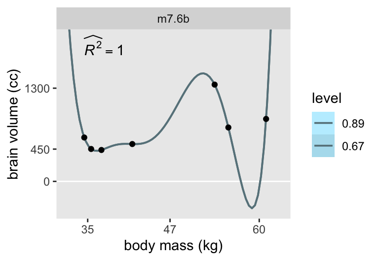
Now the results are very close to those McElreath displayed in the text.
7.1.1.1 Rethinking: Model fitting as compression.
7.1.2 Too few parameters hurts, too.
To explore the distinctions between overfitting and underfitting, we’ll need to refit b7.1 and b7.4 several times after serially dropping one of the rows in the data. You can filter() by row_number() to drop rows. For example, we can drop the second row of d like this.
d |>
mutate(row = 1:n()) |>
filter(row_number() != 2)# A tibble: 6 × 12
species brain mass mass_std brain_std mass_std1 mass_std2 mass_std3 mass_std4
<chr> <dbl> <dbl> <dbl> <dbl> <dbl> <dbl> <dbl> <dbl>
1 afaren… 438 37 -0.779 0.324 -0.779 0.608 -0.474 0.369
2 habilis 612 34.5 -1.01 0.453 -1.01 1.02 -1.03 1.04
3 boisei 521 41.5 -0.367 0.386 -0.367 0.135 -0.0494 0.0181
4 rudolf… 752 55.5 0.917 0.557 0.917 0.841 0.771 0.707
5 ergast… 871 61 1.42 0.645 1.42 2.02 2.87 4.08
6 sapiens 1350 53.5 0.734 1 0.734 0.538 0.395 0.290
# ℹ 3 more variables: mass_std5 <dbl>, mass_std6 <dbl>, row <int>In his Overthinking: Dropping rows box (p. 202), McElreath encouraged us to take a look at the brain_loo_plot() function to get a sense of how he made his Figure 7.4. You can do so by executing rethinking::brain_loo_plot in your console. Our approach will be different. We’ll begin by defining a d_fits_subset data frame starting with model, predictors, and formula columns like before. This time we add a new column called row, which we’ll use to reference which row we’d like to drop for a given iteration.
d_fits_subset <- tibble(model = str_c("m7.", c(1, 4))) |>
mutate(predictors = str_remove(model, "m7.") |>
as.integer(),
formula = c(
~ mass_std1,
~ mass_std1 + mass_std2 + mass_std3 + mass_std4)) |>
expand_grid(row = 1:7)
# What?
glimpse(d_fits_subset)Rows: 14
Columns: 4
$ model <chr> "m7.1", "m7.1", "m7.1", "m7.1", "m7.1", "m7.1", "m7.1", "m7…
$ predictors <int> 1, 1, 1, 1, 1, 1, 1, 4, 4, 4, 4, 4, 4, 4
$ formula <list> <~mass_std1>, <~mass_std1>, <~mass_std1>, <~mass_std1>, <~m…
$ row <int> 1, 2, 3, 4, 5, 6, 7, 1, 2, 3, 4, 5, 6, 7Add a mm column based on model.matrix() output.
d_fits_subset <- d_fits_subset |>
mutate(mm = map2(.x = row,
.y = formula,
.f =~ model.matrix(data = d |>
filter(row_number() != .x),
object = .y)))
# What?
print(d_fits_subset)# A tibble: 14 × 5
model predictors formula row mm
<chr> <int> <list> <int> <list>
1 m7.1 1 <formula> 1 <dbl [6 × 2]>
2 m7.1 1 <formula> 2 <dbl [6 × 2]>
3 m7.1 1 <formula> 3 <dbl [6 × 2]>
4 m7.1 1 <formula> 4 <dbl [6 × 2]>
5 m7.1 1 <formula> 5 <dbl [6 × 2]>
6 m7.1 1 <formula> 6 <dbl [6 × 2]>
7 m7.1 1 <formula> 7 <dbl [6 × 2]>
8 m7.4 4 <formula> 1 <dbl [6 × 5]>
9 m7.4 4 <formula> 2 <dbl [6 × 5]>
10 m7.4 4 <formula> 3 <dbl [6 × 5]>
11 m7.4 4 <formula> 4 <dbl [6 × 5]>
12 m7.4 4 <formula> 5 <dbl [6 × 5]>
13 m7.4 4 <formula> 6 <dbl [6 × 5]>
14 m7.4 4 <formula> 7 <dbl [6 × 5]>Next we add the d_pred column like before. When we define the stan_data this time, we also include the row column as one of the inputs in pmap(), which will allow us to subset the d data we input to compose_data().
d_fits_subset <- d_fits_subset |>
mutate(d_pred = map(.x = predictors, .f =~ d_pred |>
select(mass_std1:str_c("mass_std", .x)))) |>
mutate(stan_data = pmap(.l = list(row, mm, d_pred, formula),
.f =~ d |>
filter(row_number() != ..1) |>
select(brain_std:mass_std6) |>
compose_data(X = ..2,
Xpred = model.matrix(data = ..3, object = ..4),
k = ncol(..2))))
# What?
print(d_fits_subset)# A tibble: 14 × 7
model predictors formula row mm d_pred stan_data
<chr> <int> <list> <int> <list> <list> <list>
1 m7.1 1 <formula> 1 <dbl [6 × 2]> <df [100 × 1]> <named list>
2 m7.1 1 <formula> 2 <dbl [6 × 2]> <df [100 × 1]> <named list>
3 m7.1 1 <formula> 3 <dbl [6 × 2]> <df [100 × 1]> <named list>
4 m7.1 1 <formula> 4 <dbl [6 × 2]> <df [100 × 1]> <named list>
5 m7.1 1 <formula> 5 <dbl [6 × 2]> <df [100 × 1]> <named list>
6 m7.1 1 <formula> 6 <dbl [6 × 2]> <df [100 × 1]> <named list>
7 m7.1 1 <formula> 7 <dbl [6 × 2]> <df [100 × 1]> <named list>
8 m7.4 4 <formula> 1 <dbl [6 × 5]> <df [100 × 4]> <named list>
9 m7.4 4 <formula> 2 <dbl [6 × 5]> <df [100 × 4]> <named list>
10 m7.4 4 <formula> 3 <dbl [6 × 5]> <df [100 × 4]> <named list>
11 m7.4 4 <formula> 4 <dbl [6 × 5]> <df [100 × 4]> <named list>
12 m7.4 4 <formula> 5 <dbl [6 × 5]> <df [100 × 4]> <named list>
13 m7.4 4 <formula> 6 <dbl [6 × 5]> <df [100 × 4]> <named list>
14 m7.4 4 <formula> 7 <dbl [6 × 5]> <df [100 × 4]> <named list>Now fit the models with sampling() within map().
d_fits_subset <- d_fits_subset |>
mutate(sampling = map(.x = stan_data,
.f =~ sampling(
object = stan_dso,
data = .x,
seed = 7)))Extract the as_draws_df() output from each model.
d_fits_subset <- d_fits_subset |>
mutate(as_draws_df = map(.x = sampling, .f = as_draws_df))
# What?
d_fits_subset |>
select(model, sampling, as_draws_df)# A tibble: 14 × 3
model sampling as_draws_df
<chr> <list> <list>
1 m7.1 <stanfit[,4,110]> <draws_df [4,000 × 113]>
2 m7.1 <stanfit[,4,110]> <draws_df [4,000 × 113]>
3 m7.1 <stanfit[,4,110]> <draws_df [4,000 × 113]>
4 m7.1 <stanfit[,4,110]> <draws_df [4,000 × 113]>
5 m7.1 <stanfit[,4,110]> <draws_df [4,000 × 113]>
6 m7.1 <stanfit[,4,110]> <draws_df [4,000 × 113]>
7 m7.1 <stanfit[,4,110]> <draws_df [4,000 × 113]>
8 m7.4 <stanfit[,4,113]> <draws_df [4,000 × 116]>
9 m7.4 <stanfit[,4,113]> <draws_df [4,000 × 116]>
10 m7.4 <stanfit[,4,113]> <draws_df [4,000 × 116]>
11 m7.4 <stanfit[,4,113]> <draws_df [4,000 × 116]>
12 m7.4 <stanfit[,4,113]> <draws_df [4,000 × 116]>
13 m7.4 <stanfit[,4,113]> <draws_df [4,000 × 116]>
14 m7.4 <stanfit[,4,113]> <draws_df [4,000 × 116]>Here’s our version of Figure 7.4.
d_fits_subset |>
select(model, row, as_draws_df) |>
unnest(as_draws_df) |>
pivot_longer(starts_with("fitted"), names_to = "m") |>
mutate(m = str_extract(m, "\\d+") |> as.integer()) |>
mutate(brain = value * max(d$brain)) |>
left_join(d_pred |>
mutate(m = 1:n()),
by = join_by(m)) |>
mutate(mass = mass_std1 * sd(d$mass) + mean(d$mass)) |>
ggplot(aes(x = mass, y = brain)) +
stat_lineribbon(aes(group = row),
point_interval = mean_qi, .width = 0,
alpha = 3/4, color = "lightblue4", linewidth = 1/3) +
geom_point(data = d) +
scale_x_continuous("body mass (kg)", breaks = c(35, 47, 60)) +
scale_y_continuous("brain volume (cc)", breaks = c(0, 450, 900, 1300, 2000)) +
scale_fill_brewer(breaks = NULL) +
coord_cartesian(xlim = c(34, 61),
ylim = c(0, 2000)) +
facet_wrap(~ model)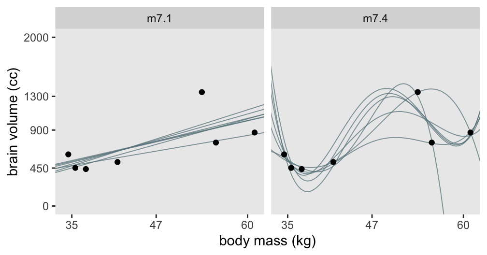
7.1.2.1 Rethinking: Bias and variance.
7.2 Entropy and accuracy
7.2.1 Firing the weatherperson.
7.2.1.1 Costs and benefits.
7.2.1.2 Measuring accuracy.
7.2.1.3 Rethinking: Calibration is overrated.
7.2.2 Information and uncertainty.
The formula for information entropy is:
\[H(p) = - \text E \log (p_i) = - \sum_{i = 1}^n p_i \log (p_i).\]
McElreath put it in words as: “The uncertainty contained in a probability distribution is the average log-probability of an event.” (p. 206). We’ll compute the information entropy for weather at the first unnamed location, which we’ll call McElreath's house, and Abu Dhabi at once.
tibble(place = c("McElreath's house", "Abu Dhabi"),
p_rain = c(0.3, 0.01)) |>
mutate(p_shine = 1 - p_rain) |>
group_by(place) |>
mutate(h_p = (p_rain * log(p_rain) + p_shine * log(p_shine)) |> mean() * -1)# A tibble: 2 × 4
# Groups: place [2]
place p_rain p_shine h_p
<chr> <dbl> <dbl> <dbl>
1 McElreath's house 0.3 0.7 0.611
2 Abu Dhabi 0.01 0.99 0.0560If you have sun, rain and snow, the entropy for weather is:
p <- c(0.7, 0.15, 0.15)
-sum(p * log(p))[1] 0.81880857.2.2.1 Overthinking: More on entropy.
7.2.2.2 Rethinking: The benefits of maximizing uncertainty.
7.2.3 From entropy to accuracy.
7.2.3.1 Overthinking: Cross entropy and divergence.
7.2.3.2 Rethinking: Divergence depends upon direction.
Here we see \(H(p, q) \neq H(q, p)\). That is, direction matters.
tibble(direction = c("Earth to Mars", "Mars to Earth"),
p_1 = c(0.01, 0.7),
q_1 = c(0.7, 0.01)) |>
mutate(p_2 = 1 - p_1,
q_2 = 1 - q_1) |>
mutate(d_kl = (p_1 * log(p_1 / q_1)) + (p_2 * log(p_2 / q_2)))# A tibble: 2 × 6
direction p_1 q_1 p_2 q_2 d_kl
<chr> <dbl> <dbl> <dbl> <dbl> <dbl>
1 Earth to Mars 0.01 0.7 0.99 0.3 1.14
2 Mars to Earth 0.7 0.01 0.3 0.99 2.627.2.4 Estimating divergence.
We define deviance as
\[D(q) = -2 \sum_i \log (q_i),\]
where \(i\) indexes each case and \(q_i\) is the likelihood for each case. Here’s the deviance from the OLS version of model m7.1.
lm(data = d, brain_std ~ mass_std) |>
logLik() * -2'log Lik.' -5.985049 (df=3)In our \(D(q)\) formula, did you notice how we ended up multiplying \(\sum_i \log (p_i)\) by \(-2\)? Frequentists and Bayesians alike make use of information theory, KL divergence, and deviance. It turns out that the differences between two \(D(q)\) values follows a \(\chi^2\) distribution (Wilks, 1938), which frequentists like to reference for the purpose of null-hypothesis significance testing. Some Bayesians, however, are not into all that significance-testing stuff and they aren’t as inclined to multiply \(\sum_i \log (p_i)\) by \(-2\) for the simple purpose of scaling the associated difference distribution to follow the \(\chi^2\). If we leave that part out of the equation, we end up with
\[S(q) = \sum_i \log (q_i),\]
which we can think of as a log-probability score which is “the gold standard way to compare the predictive accuracy of different models. It is an estimate of \(\text E \log (q_i)\), just without the final step of dividing by the number of observations” (p. 210).
When Bayesians compute \(S(q)\), they do so over the entire posterior distribution. The rstan package does not have a convenience function for computing the log likelihood, and the log likelihood is not computed automatically for stan() models. From the loo.stanfit section of the current version (2.32.6) of the rstan reference manual (Guo et al., 2024), we read:
Stan does not automatically compute and store the log-likelihood. It is up to the user to incorporate it into the Stan program if it is to be extracted after fitting the model. In a Stan program, the pointwise log likelihood can be coded as a vector in the transformed parameters block (and then summed up in the model block) or it can be coded entirely in the generated quantities block. We recommend using the generated quantities block so that the computations are carried out only once per iteration rather than once per HMC leapfrog step.
For example, the following is the
generated quantitiesblock for computing and saving the loglikelihood for a linear regression model withNdata points, outcomey, predictor matrixX(including column of 1s for intercept), coefficientsbeta, and standard deviationsigma:
vector[N] log_lik;for (n in 1:N) log_lik[n] = normal_lpdf(y[n] | X[n, ] * beta, sigma);
Here’s how to update the model_code for model m7.1 to include log_lik within the generated quantities block.
model_code_7.1ll <- '
data {
int<lower=1> n;
int<lower=1> k;
vector[n] brain_std;
matrix[n, k] X;
matrix[100, k] Xpred; // New data for fitted lines
}
parameters {
vector[k] b;
real log_sigma;
}
model {
brain_std ~ normal(X * b, exp(log_sigma));
b[1] ~ normal(0.5, 1);
b[2] ~ normal(0, 10);
log_sigma ~ normal(0, 1);
}
generated quantities {
vector[n] log_lik;
for (i in 1:n) log_lik[i] = normal_lpdf(brain_std[i] | X[i, ] * b, exp(log_sigma));
}
'Compile and fit this version the model with stan().
m7.1ll <- stan(
data = stan_data,
model_code = model_code_7.1ll,
cores = 4, seed = 7)Notice the seven log_lik[i] rows in the print() output, one for each case in the sample data.
print(m7.1ll, probs = c(0.055, 0.945))Inference for Stan model: anon_model.
4 chains, each with iter=2000; warmup=1000; thin=1;
post-warmup draws per chain=1000, total post-warmup draws=4000.
mean se_mean sd 5.5% 94.5% n_eff Rhat
b[1] 0.53 0.00 0.11 0.36 0.69 2028 1
b[2] 0.17 0.00 0.12 -0.01 0.35 1914 1
log_sigma -1.40 0.01 0.39 -1.95 -0.72 1259 1
log_lik[1] 0.30 0.01 0.42 -0.43 0.91 1165 1
log_lik[2] 0.32 0.01 0.43 -0.43 0.94 1086 1
log_lik[3] 0.24 0.01 0.45 -0.56 0.86 1245 1
log_lik[4] 0.32 0.01 0.39 -0.37 0.89 1177 1
log_lik[5] 0.16 0.01 0.47 -0.68 0.81 1513 1
log_lik[6] 0.07 0.01 0.60 -1.01 0.82 1580 1
log_lik[7] -0.92 0.02 0.97 -2.87 0.15 2512 1
lp__ 5.87 0.05 1.64 2.85 7.59 949 1
Samples were drawn using NUTS(diag_e) at Thu Aug 1 12:53:23 2024.
For each parameter, n_eff is a crude measure of effective sample size,
and Rhat is the potential scale reduction factor on split chains (at
convergence, Rhat=1).Because we have computed the log_lik values in the generated quantities block of the model program, we can also use the rstan::loo() function, which searchers for a log_lik parameter vector in the model fit, by the default setting pars = "log_lik".
l7.1 <- loo(m7.1ll, pars = "log_lik")We can convert these log_lik[i] values into log probability scores like so.
m7.1ll |>
spread_draws(log_lik[i]) |>
mutate(prob = exp(log_lik)) |>
group_by(i) |>
summarise(log_probability_score = mean(prob) |> log())# A tibble: 7 × 2
i log_probability_score
<int> <dbl>
1 1 0.381
2 2 0.407
3 3 0.329
4 4 0.394
5 5 0.259
6 6 0.216
7 7 -0.603“If you sum these values, you’ll have the total log-probability score for the model and data” (p. 210). Here we sum those \(\log (q_i)\) values up to compute \(S(q)\).
m7.1ll |>
spread_draws(log_lik[i]) |>
mutate(prob = exp(log_lik)) |>
group_by(i) |>
summarise(log_probability_score = mean(prob) |> log()) |>
# This is the only new step from the last code block
summarise(total_log_probability_score = sum(log_probability_score))# A tibble: 1 × 1
total_log_probability_score
<dbl>
1 1.387.2.4.1 Overthinking: Computing the lppd.
The Bayesian version of the log-probability score, what we’ve been calling the lppd, has to account for the data and the posterior distribution. It follows the form
\[\text{lppd}(y, \Theta) = \sum_i \log \frac{1}{S} \sum_s p (y_i | \Theta_s),\]
where \(S\) is the number of samples and \(\Theta_s\) is the \(s\)-th set of sampled parameter values in the posterior distribution. While in principle this is easy–you just need to compute the probability (density) of each observation \(i\) for each sample \(s\), take the average, and then the logarithm–in practice it is not so easy. The reason is that doing arithmetic in a computer often requires some tricks to retain precision. (p. 210)
Though we computed these values above with the log_lik[i] values defined in the generated quantities block of the model_code, we can also do it by hand with the posterior distribution and the sample data. When we pull the posterior draws with as_draws_df(), the HMC draws, what McElreath called \(s\), are indexed in the .draw column. We’ll rename that column s. The term \(p (y_i | \Theta_s)\) is the probability of the brain_std values for each of the rows of the data, which we’ve indexed by the i column, given the samples form the posterior distribution \(\Theta_s\). Those \(\Theta_s\) values are our b[1], b[2] and log_sigma columns, seen through the lens of the Gaussian likelihood. Thus we compute \(p (y_i | \Theta_s)\) within the dnorm() function, which we save as density[i][s].
log_prob_df <- as_draws_df(m7.1ll) |>
# Index the samples using McElreath's notation
mutate(s = .draw) |>
# Add the sample data
expand_grid(d |>
mutate(i = 1:n()) |>
select(i, species:brain_std)) |>
# Not needed, but simplifies the output
select(s, i, species, brain_std, mass_std, `b[1]`, `b[2]`, log_sigma) |>
# Define p(y[i] | Theta[s])
mutate(`density[i][s]` = dnorm(x = brain_std,
mean = `b[1]` + `b[2]` * mass_std,
sd = exp(log_sigma)))
# What?
glimpse(log_prob_df)Rows: 28,000
Columns: 9
$ s <int> 1, 1, 1, 1, 1, 1, 1, 2, 2, 2, 2, 2, 2, 2, 3, 3, 3, 3, …
$ i <int> 1, 2, 3, 4, 5, 6, 7, 1, 2, 3, 4, 5, 6, 7, 1, 2, 3, 4, …
$ species <chr> "afarensis", "africanus", "habilis", "boisei", "rudolf…
$ brain_std <dbl> 0.3244444, 0.3348148, 0.4533333, 0.3859259, 0.5570370,…
$ mass_std <dbl> -0.7794667, -0.9170196, -1.0087216, -0.3668079, 0.9170…
$ `b[1]` <dbl> 0.5111734, 0.5111734, 0.5111734, 0.5111734, 0.5111734,…
$ `b[2]` <dbl> 0.6746181, 0.6746181, 0.6746181, 0.6746181, 0.6746181,…
$ log_sigma <dbl> -0.4891425, -0.4891425, -0.4891425, -0.4891425, -0.489…
$ `density[i][s]` <dbl> 0.5583681, 0.5016021, 0.3885140, 0.6378460, 0.4205836,…By \(\frac{1}{S} \sum_s p (y_i | \Theta_s)\), we are computing the average density value separately for each row in the sample data, i.
log_prob_df |>
group_by(i) |>
summarise(`mean_density[i]` = mean(`density[i][s]`))# A tibble: 7 × 2
i `mean_density[i]`
<int> <dbl>
1 1 1.46
2 2 1.50
3 3 1.39
4 4 1.48
5 5 1.30
6 6 1.24
7 7 0.547Then by the rightmost terms in the equation, \(\sum_i \log \cdot\), we take the log of those values and sum them up.
log_prob_df |>
group_by(i) |>
summarise(`mean_density[i]` = mean(`density[i][s]`)) |>
summarise(total_log_probability_score = log(`mean_density[i]`) |> sum())# A tibble: 1 × 1
total_log_probability_score
<dbl>
1 1.38That is the log-pointwise-predictive-density, \(\text{lppd}(y, \Theta)\), computed by hand.
7.2.5 Scoring the right data.
Since our stan() models from above do not have log-likelihood values saved from each, we have to options to make an alternative to McElreath’s R code 7.15:
- we can compute each by hand, like in the last section, but with a custom-defined linear function within
dnorm(), or - we can refit the models after adding
log_lik[i]definitions in thegenerated quantitiesblock of the model program.
I’m opting for the latter. To that end, define the model_code_7.1to6ll object with a generated quantities block.
model_code_7.1to6ll <- '
data {
int<lower=1> n;
int<lower=1> k;
vector[n] brain_std;
matrix[n, k] X;
matrix[100, k] Xpred;
}
parameters {
vector[k] b;
real log_sigma;
}
model {
brain_std ~ normal(X * b, exp(log_sigma));
b[1] ~ normal(0.5, 1);
b[2:k] ~ normal(0, 10);
log_sigma ~ normal(0, 1);
}
generated quantities {
// Define and compute the log likelihood
vector[n] log_lik;
for (i in 1:n) log_lik[i] = normal_lpdf(brain_std[i] | X[i, ] * b, exp(log_sigma));
}
'Compile and save the stan_dso_ll.
stan_dso_ll <- stan_model(model_code = model_code_7.1to6ll)Now draw from the posterior distributions of all 6 models by using the sampling() function within map(), and then extract the log_lik estimates from each model with spread_draws() within map().
d_fits_ll <- d_fits |>
# Subset the data frame
select(model, stan_data) |>
# Sample from each model
mutate(sampling = map(.x = stan_data,
.f =~ sampling(
object = stan_dso_ll,
data = .x,
seed = 7))) |>
# Extract the posterior draws for the `log_lik` estimates
mutate(spread_draws = map(.x = sampling,
.f =~ spread_draws(
model = .x,
log_lik[i])))Compute the total_log_probability_score for each model.
d_fits_ll |>
select(model, spread_draws) |>
unnest(spread_draws) |>
rename(s = .draw) |>
mutate(`density[i][s]` = exp(log_lik)) |>
group_by(model, i) |>
summarise(`mean_density[i]` = mean(`density[i][s]`)) |>
group_by(model) |>
summarise(total_log_probability_score = log(`mean_density[i]`) |> sum())`summarise()` has grouped output by 'model'. You can override using the
`.groups` argument.# A tibble: 6 × 2
model total_log_probability_score
<chr> <dbl>
1 m7.1 1.38
2 m7.2 0.712
3 m7.3 0.640
4 m7.4 0.273
5 m7.5 0.0968
6 m7.6 -2.16 7.2.5.1 Overthinking: Simulated training and testing.
I’m leaving this out, for now. If you want a sense of how to do this, check out this section in my brms translation (here).
7.3 Golem taming: regularization
I’ll leave the simulation for Figure 7.8 for another day. If you want a sense of how to do this, check out this section in my brms translation (here).
7.3.0.1 Rethinking: Ridge regression.
7.4 Predicting predictive accuracy
7.4.1 Cross-validation.
7.4.1.1 Overthinking: Pareto-smoothed cross-validation.
7.4.2 Information criteria.
We define the widely applicable information criterion (WAIC) as
\[\text{WAIC}(y, \Theta) = -2 \big ( \text{lppd} - {\color{blue}{\sum_i \operatorname{var}_\theta \log p (y_i \mid \theta)}} \big),\]
where \(y\) is the criterion, \(\Theta\) is the posterior distribution, and the terms in the blue font make up the complexity penalty.
7.4.2.1 Overthinking: The Akaike inspiration criterion.
7.4.2.2 Rethinking: Information criteria and consistency.
7.4.2.3 Rethinking: What about BIC and Bayes factors?
7.4.2.4 Overthinking: WAIC calculations.
Here is how to fit the pre-WAIC model with brms.
Define the stan_data version of the cars data set.
stan_data <- cars |>
compose_data()
# What?
str(stan_data)List of 3
$ speed: num [1:50(1d)] 4 4 7 7 8 9 10 10 10 11 ...
$ dist : num [1:50(1d)] 2 10 4 22 16 10 18 26 34 17 ...
$ n : int 50Define model_code_7.7.
model_code_7.7 <- '
data {
int<lower=1> n;
vector[n] speed;
vector[n] dist;
}
parameters {
real b0;
real b1;
real<lower=0> sigma;
}
model {
dist ~ normal(b0 + b1 * speed, sigma);
b0 ~ normal(0, 100);
b1 ~ normal(0, 10);
sigma ~ exponential(1);
}
generated quantities {
// Define and compute the log likelihood
vector[n] log_lik;
for (i in 1:n) log_lik[i] = normal_lpdf(dist[i] | b0 + b1 * speed[i], sigma);
}
'Fit m7.7 with stan().
m7.7 <- stan(
data = stan_data,
model_code = model_code_7.7,
cores = 4, seed = 7)Check the model summary.
print(m7.7, pars = c("b0", "b1", "sigma"), probs = c(0.055, 0.945))Inference for Stan model: anon_model.
4 chains, each with iter=2000; warmup=1000; thin=1;
post-warmup draws per chain=1000, total post-warmup draws=4000.
mean se_mean sd 5.5% 94.5% n_eff Rhat
b0 -17.50 0.17 6.09 -27.29 -7.73 1324 1
b1 3.93 0.01 0.37 3.33 4.53 1316 1
sigma 13.82 0.03 1.22 12.03 15.89 1842 1
Samples were drawn using NUTS(diag_e) at Fri Aug 2 13:06:15 2024.
For each parameter, n_eff is a crude measure of effective sample size,
and Rhat is the potential scale reduction factor on split chains (at
convergence, Rhat=1).For the sake of practice, here’s the fitted line plotted against the data.
# range(cars$speed) # 4 25
as_draws_df(m7.7) |>
expand_grid(speed = 4:25) |>
mutate(dist = b0 + b1 * speed) |>
ggplot(aes(x = speed, y = dist)) +
stat_lineribbon(.width = 0.89, fill = "gray67", linewidth = 1/2) +
geom_point(data = cars,
alpha = 3/4, color = "blue")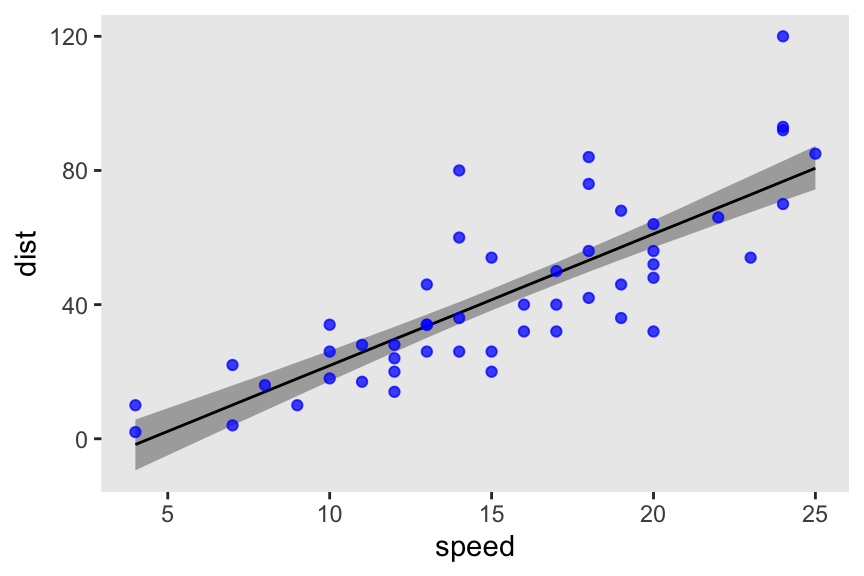
As the the log likelihood and the WAIC, because of our generated quantities block, our m7.7 object has a vector of log_lik values for each case in the data. We’ll make explicit use of those in a moment. But since this is such a simple model, we’ll first practice by hand. Here we extract the posterior draws just for the model parameters b0, b1 and sigma from m7.7, use expand_grid() to add in the cars data, compute the log_lik values with dnorm(log = TRUE), exponentiate those values back to the likelihood metric with exp(), and save the results as a data frame called d_log_lik.
d_log_lik <- m7.7 |>
spread_draws(b0, b1, sigma) |>
expand_grid(cars |>
mutate(i = 1:n()) |>
select(i, everything())) |>
# In R code 7.20, McElreath called this `logprob`
mutate(log_lik = dnorm(x = dist,
mean = b0 + b1 * speed,
sd = sigma,
log = TRUE)) |>
mutate(lik = exp(log_lik))
# What?
glimpse(d_log_lik)Rows: 200,000
Columns: 11
$ .chain <int> 1, 1, 1, 1, 1, 1, 1, 1, 1, 1, 1, 1, 1, 1, 1, 1, 1, 1, 1, 1,…
$ .iteration <int> 1, 1, 1, 1, 1, 1, 1, 1, 1, 1, 1, 1, 1, 1, 1, 1, 1, 1, 1, 1,…
$ .draw <int> 1, 1, 1, 1, 1, 1, 1, 1, 1, 1, 1, 1, 1, 1, 1, 1, 1, 1, 1, 1,…
$ b0 <dbl> -11.39182, -11.39182, -11.39182, -11.39182, -11.39182, -11.…
$ b1 <dbl> 3.672345, 3.672345, 3.672345, 3.672345, 3.672345, 3.672345,…
$ sigma <dbl> 14.86227, 14.86227, 14.86227, 14.86227, 14.86227, 14.86227,…
$ i <int> 1, 2, 3, 4, 5, 6, 7, 8, 9, 10, 11, 12, 13, 14, 15, 16, 17, …
$ speed <dbl> 4, 4, 7, 7, 8, 9, 10, 10, 10, 11, 11, 12, 12, 12, 12, 13, 1…
$ dist <dbl> 2, 10, 4, 22, 16, 10, 18, 26, 34, 17, 28, 14, 20, 24, 28, 2…
$ log_lik <dbl> -3.621575, -3.719451, -3.858590, -3.751465, -3.626701, -3.9…
$ lik <dbl> 0.0267405229, 0.0242472711, 0.0210977186, 0.0234833221, 0.0…Recall the formula for the \(\text{lppd}\) was
\[\text{lppd}(y, \Theta) = \sum_i \log \frac{1}{S} \sum_s p (y_i | \Theta_s),\]
where \(p (y_i | \Theta_s)\) is the likelihood of case \(i\) on posterior draw \(s\). For each case \(i\) (i.e., \(\sum_i\)), we then take the average likelihood value [i.e., \(\frac{1}{S} \sum_s p (y_i | \Theta_s)\)] and transform the result by taking its log [i.e., \(\log \left (\frac{1}{S} \sum_s p (y_i | \Theta_s) \right )\)]. When we sum those values up, we have the \(\text{lppd}\), which we’ll save as a scalar named lppd.
lppd <- d_log_lik |>
group_by(i) |>
summarise(log_mean_likelihood = mean(lik) |> log()) |>
summarise(lppd = sum(log_mean_likelihood)) |>
pull(lppd)
# What?
print(lppd)[1] -206.6241It’s a little easier to compute the effective number of parameters, \(p_\text{WAIC}\). First, let’s use a shorthand notation and define \(V(y_i)\) as the variance in log-likelihood for the \(i^\text{th}\) case across all \(S\) samples. We define \(p_\text{WAIC}\) as their sum
\[p_\text{WAIC} = \sum_{i=1}^N V (y_i).\]
We’ll name the pointwise results [i.e., \(V (y_i)\)] as var_log_lik, and we’ll save their sum [i.e., \(\sum_{i=1}^N V (y_i)\)] as a scalar named pwaic.
pwaic <- d_log_lik |>
group_by(i) |>
summarise(var_log_lik = var(log_lik)) |>
summarise(pwaic = sum(var_log_lik)) |>
pull(pwaic)
# What?
print(pwaic)[1] 4.086416Now we can finally plug our hand-made lppd and pwaic values into the formula \(-2 (\text{lppd} - p_\text{WAIC})\) to compute the WAIC.
# WAIC
-2 * (lppd - pwaic)[1] 421.4209Now we’re finally ready to use those log_lik vectors from our generated quantities block. The loo package has a extract_log_lik() function that expects a vector named log_lik. This will convert them to a matrix with as many rows as posterior draws, and as many columns as cases in the sample data. In our case, That will make for a \(4{,}000 \times 50\) matrix.
extract_log_lik(m7.7) |>
str() num [1:4000, 1:50] -3.62 -3.49 -3.66 -3.83 -3.65 ...We can then pump this log-likelihood matrix directly into the loo::waic() function, the results of which we’ll save as w7.7.
w7.7 <- extract_log_lik(m7.7) |>
waic()We can get a nice summary with print().
print(w7.7)
Computed from 4000 by 50 log-likelihood matrix.
Estimate SE
elpd_waic -210.7 8.2
p_waic 4.1 1.6
waic 421.4 16.4
2 (4.0%) p_waic estimates greater than 0.4. We recommend trying loo instead. Lo and behold, the value in the Estimate column of the waic row matches the waic scalar we hand-computed just a few code blocks above.
Before we move on, did you notice the elpd_waic row? That value is the lppd minus the pwaic, but without multiplying the result by -2. Here’s how that matches up with our hand-computed scalars.
(lppd - pwaic)[1] -210.7105Recalling some of the intermediary steps from above, here’s how we might compute the WAIC standard error by hand.
n_cases <- nrow(cars) # 50
d_log_lik |>
group_by(i) |>
summarise(log_mean_likelihood = mean(lik) |> log(),
var_log_lik = var(log_lik)) |>
# Compute the pointwise waic values
mutate(pointwise_waic = -2 * (log_mean_likelihood - var_log_lik)) |>
summarise(waic_se = sqrt(n_cases * var(pointwise_waic)))# A tibble: 1 × 1
waic_se
<dbl>
1 16.4If you’d like the pointwise WAIC values from waic() output, just index.
w7.7$pointwise |>
head() elpd_waic p_waic waic
[1,] -3.648848 0.02209327 7.297696
[2,] -4.022936 0.09582308 8.045871
[3,] -3.684862 0.02091625 7.369725
[4,] -3.994271 0.06003729 7.988543
[5,] -3.587983 0.01035827 7.175966
[6,] -3.742794 0.02106961 7.4855887.4.3 Comparing CV, PSIS, and WAIC.
I’ll leave the simulation for Figure 7.9 for another day.
However, when it comes to the LOO-CV for stan() models, we can use the convenience function loo::loo() in much the same we used the waic(). Here’s what that looks like for m7.7.
extract_log_lik(m7.7) |>
loo()
Computed from 4000 by 50 log-likelihood matrix.
Estimate SE
elpd_loo -210.8 8.3
p_loo 4.2 1.6
looic 421.6 16.5
------
MCSE of elpd_loo is 0.1.
MCSE and ESS estimates assume independent draws (r_eff=1).
All Pareto k estimates are good (k < 0.7).
See help('pareto-k-diagnostic') for details.As long as you compute the log_lik values in the generated quantities block for input to stan(), the workflow is smooth. However, if you’re ever in a situation where you haven’t done that, you can do this all by hand. For example, this is how you can get the loo() summary for hand-computed log_lik values.
m7.7 |>
spread_draws(b0, b1, sigma) |>
expand_grid(cars |>
mutate(i = 1:n()) |>
select(i, everything())) |>
mutate(log_lik = dnorm(x = dist,
mean = b0 + b1 * speed,
sd = sigma,
log = TRUE)) |>
# Everything up to this point is a repeat from earlier
select(.draw, i, log_lik) |>
pivot_wider(names_from = i, values_from = log_lik) |>
select(-.draw) |>
as.matrix() |>
loo()
Computed from 4000 by 50 log-likelihood matrix.
Estimate SE
elpd_loo -210.8 8.3
p_loo 4.2 1.6
looic 421.6 16.5
------
MCSE of elpd_loo is 0.1.
MCSE and ESS estimates assume independent draws (r_eff=1).
All Pareto k estimates are good (k < 0.7).
See help('pareto-k-diagnostic') for details.Hopefully you’ll never have to do that, though.
7.4.3.1 Rethinking: Diverse prediction frameworks.
7.5 Model comparison
7.5.1 Model mis-selection.
Once again we return to the plant growth models from back in Section 6.2, models m6.6, m6.7, and m6.8. If you were following along closely, you may have notices we defined the log_lik values in the generated quantities block for each, but put off their discussion until now. Here we’ll use out extract_log_lik |> waic() workflow to compute the WAIC summaries for each, and save them as objects named w6.6 through w6.8.
w6.6 <- m6.6 |>
extract_log_lik() |>
waic()
w6.7 <- m6.7 |>
extract_log_lik() |>
waic()
w6.8 <- m6.8 |>
extract_log_lik() |>
waic()Like in the text (p. 226), here’s the waic() output for m6.7.
print(w6.7)
Computed from 4000 by 100 log-likelihood matrix.
Estimate SE
elpd_waic -180.6 6.7
p_waic 3.4 0.5
waic 361.3 13.4For our rstan + loo based workflow, we can compare multiple models by their WAIC with the loo_compare() function. The name of the function implies you should be using the LOO-CV, rather than the WAIC. Given the preferences of the package’s authors, that’s no surprise (e.g., see the opening paragraph here). But yes, you can also use loo_compare() function to compare models by their WAIC estimates. Here we save the output as an object called w_difference, and then display a summary of the results.
w_difference <- loo_compare(w6.6, w6.7, w6.8)
w_difference |>
print(simplify = FALSE) elpd_diff se_diff elpd_waic se_elpd_waic p_waic se_p_waic waic se_waic
model2 0.0 0.0 -180.6 6.7 3.4 0.5 361.3 13.4
model3 -20.6 4.9 -201.2 5.4 2.5 0.3 402.5 10.7
model1 -22.4 5.8 -203.1 5.7 1.6 0.2 406.1 11.4 Though the format is a little different, out output largely matches what McElreath displayed on page 227 of the text. With respect to our loo_compare() output, notice the elpd_diff column and the adjacent se_diff column. Those are our WAIC differences in the elpd metric. The models have been rank ordered from the highest (i.e., m6.7, called model2) to the lowest (i.e., m6.6, called model1). The scores listed are the differences of m6.7 minus the comparison model. Since m6.7 is the comparison model in the top row, the values are naturally 0 (i.e., \(x - x = 0\)). But now here’s another critical thing to understand: WAIC and LOO differences are no longer reported in the \(-2 \times x\) metric. Remember how multiplying (lppd - pwaic) by -2 is a historic artifact associated with the frequentist \(\chi^2\) test? We’ll, the makers of the loo package aren’t fans, and they no longer support the conversion.
So here’s the deal: The substantive interpretations of the differences presented in an elpd_diff metric will be the same as if presented in a WAIC metric. But if we want to compare our elpd_diff results to those in the text, we will have to multiply them by -2. And also, if we want the associated standard error in the same metric, we’ll need to multiply the se_diff column by 2. You wouldn’t multiply by -2 because that would return a negative standard error, which would be silly. Here’s a quick way to do those conversions.
cbind(waic_diff = w_difference[, 1] * -2,
se = w_difference[, 2] * 2) waic_diff se
model2 0.00000 0.000000
model3 41.21758 9.787452
model1 44.83923 11.568710Now those match up reasonably well with the values in McElreath’s dWAIC and dSE columns.
Anyway, here’s how to compute the standard error for the WAIC difference for m6.7 and m6.8, by hand, like McElreath did in the top of page 228.
tibble(m6.7 = w6.7$pointwise[, "waic"],
m6.8 = w6.8$pointwise[, "waic"]) |>
mutate(diff_m6.7_m6.8 = m6.7 - m6.8) |>
summarise(se = sqrt(n() * var(diff_m6.7_m6.8)))# A tibble: 1 × 1
se
<dbl>
1 9.79For us, the 99% interval for the difference distribution would be about so.
41.2 + c(-1, 1) * 9.8 * 2.6[1] 15.72 66.68Here’s our version of a WAIC coefficient plot.
bind_rows(w6.6$estimates["waic", ],
w6.7$estimates["waic", ],
w6.8$estimates["waic", ]) |>
mutate(model = str_c("m6.", 6:8) |>
fct_reorder(Estimate, .desc = TRUE),
lower = Estimate - SE,
upper = Estimate + SE) |>
ggplot(aes(x = Estimate, xmin = lower, xmax = upper, y = model)) +
geom_pointrange(shape = 1) +
labs(x = "WAIC",
y = NULL)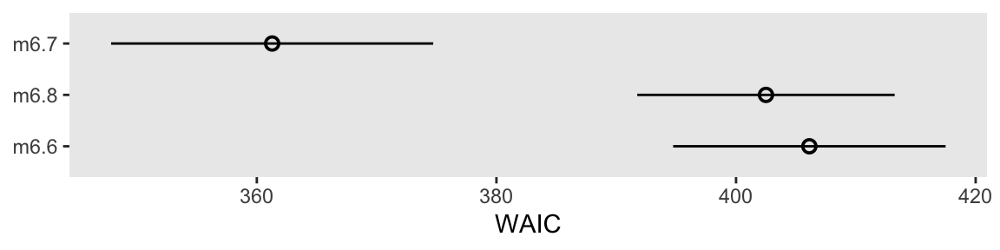
We don’t get the deviance points with this method, but that’s okay. Our primary focus is on the WAIC and its standard errors. IMO, the deviance points are mainly of pedagogical interest.
As far as WAIC weights go, I’m not aware there is a quick and convenient way to compute WAIC weights for an rstan model. But if we look to the vignette here, we can compute them by hand.
w_difference |>
data.frame() |>
mutate(weight = exp(elpd_waic) / sum(exp(elpd_waic))) |>
select(waic, weight) |>
# Just to make the output nicer
mutate_all(round, digits = 2) waic weight
model2 361.28 1
model3 402.50 0
model1 406.12 0Before we move on, I should point out you can do all of this for the loo(), as well. For example, here’s a quick way to get the loo_compare() summary for the LOO estimates from our three models.
loo_compare(
extract_log_lik(m6.6) |> loo(),
extract_log_lik(m6.7) |> loo(),
extract_log_lik(m6.8) |> loo()
) |>
print(simplify = FALSE) elpd_diff se_diff elpd_loo se_elpd_loo p_loo se_p_loo looic se_looic
model2 0.0 0.0 -180.7 6.7 3.4 0.5 361.3 13.4
model3 -20.6 4.9 -201.3 5.4 2.5 0.3 402.5 10.7
model1 -22.4 5.8 -203.1 5.7 1.7 0.2 406.1 11.4 Speaking of the LOO, the loo package, does support other kinds of model weights. With the loo_model_weights() function, we can compute stacking weights, or pseudo-Bayesian model averaging (BMA) weights. The loo_model_weights() function takes input in the form of a list of psis_loo objects (i.e., loo() output). Here’s what that can look like for both stackind and pseudo-BMA weights.
# stacking
loo_model_weights(
list(extract_log_lik(m6.6) |> loo(),
extract_log_lik(m6.7) |> loo(),
extract_log_lik(m6.8) |> loo()),
method = "stacking"
)Method: stacking
------
weight
model1 0.000
model2 1.000
model3 0.000 # pseudobma
loo_model_weights(
list(extract_log_lik(m6.6) |> loo(),
extract_log_lik(m6.7) |> loo(),
extract_log_lik(m6.8) |> loo()),
method = "pseudobma"
)Method: pseudo-BMA+ with Bayesian bootstrap
------
weight
model1 0.000
model2 1.000
model3 0.000 For more on these types of weighting methods, see Yao et al. (2018).
7.5.1.1 Rethinking: WAIC metaphors.
7.5.2 Outliers and other illusions.
Time to bring back the WaffleDivorce data, and reconsider the models from back in Section 5.1.
data(WaffleDivorce, package = "rethinking")
d <- WaffleDivorce |>
mutate(d = rethinking::standardize(Divorce),
m = rethinking::standardize(Marriage),
a = rethinking::standardize(MedianAgeMarriage))
rm(WaffleDivorce)For each of the models m5.1 through m5.3, we computed the log_lik using the generated quantities block method. Here we compute and save their loo() output as objects named l5.1 through l5.3.
l5.1 <- m5.1 |>
extract_log_lik() |>
loo()
l5.2 <- m5.2 |>
extract_log_lik() |>
loo()
l5.3 <- m5.3 |>
extract_log_lik() |>
loo()Now compare the models by the PSIS-LOO-CV.
loo_compare(l5.1, l5.2, l5.3) |>
print(simplify = FALSE) elpd_diff se_diff elpd_loo se_elpd_loo p_loo se_p_loo looic se_looic
model1 0.0 0.0 -62.9 6.4 3.7 1.8 125.8 12.8
model3 -1.0 0.3 -63.9 6.4 4.8 1.9 127.8 12.9
model2 -6.8 4.6 -69.7 5.0 3.0 1.0 139.4 10.0 Like in the text, our m5.1 has the best LOO estimate, but only by a little bit when compared to m5.3. Unlike McElreath reported in the text, we did not get a warning message from loo_compare(). Let’s investigate more carefully with the loo() function.
loo(m5.3)
Computed from 4000 by 50 log-likelihood matrix.
Estimate SE
elpd_loo -63.9 6.4
p_loo 4.8 1.9
looic 127.8 12.9
------
MCSE of elpd_loo is 0.1.
MCSE and ESS estimates assume MCMC draws (r_eff in [0.6, 1.3]).
All Pareto k estimates are good (k < 0.7).
See help('pareto-k-diagnostic') for details.The critical line in that output was All Pareto k estimates are good (k < 0.7). The loo package bins the Pareto-\(k\) values into ranges labeled ok, good, bad, and very bad, and you will get warnings if anything starts to look bad or worse.
To dig deeper, we can use the pareto_k_ids() function to identify which observation[s] might have crossed out of the (good) range into the (ok) range.
loo(m5.3) |>
pareto_k_ids(threshold = 0.5)[1] 13The number 13 refers to the corresponding row in the data used to fit the model. We can access that row directly with the dplyr::slice() function.
d |>
slice(13) |>
select(Location:Loc) Location Loc
1 Idaho IDHere we subset the 13th cell in the loo::pareto_k_values() output to see what that \(k\) value was.
pareto_k_values(l5.3)[13][1] 0.6680358Alternatively, we could have extracted that value from our l5.3 object with indexing like so.
l5.3$diagnostics$pareto_k[13][1] 0.66803580.67 is a little high, but not high enough to cause loo() to return a warning message. Once a Pareto \(k\) value crosses the 0.7 threshold, though, the loo package will bark. Before we make our version of Figure 7.10, we’ll want to compute the WAIC for m5.3, which will give us access to the \(p_\text{WAIC}\).
w5.3 <- m5.3 |>
extract_log_lik() |>
waic()We’re ready to make our version of Figure 7.10.
d_k <- tibble(
pareto_k = l5.3$diagnostics$pareto_k,
p_waic = w5.3$pointwise[, "p_waic"],
Loc = pull(d, Loc))
d_k |>
ggplot(aes(x = pareto_k, y = p_waic, color = Loc == "ID")) +
geom_vline(xintercept = c(0.5, 0.7),
alpha = 1/2, color = "black", linetype = 2) +
geom_point(aes(shape = Loc == "ID")) +
geom_text(data = d_k |>
filter(p_waic > 0.5),
aes(label = Loc),
hjust = 1, nudge_x = -0.03) +
scale_x_continuous(expression(PSIS~Pareto~italic(k)), breaks = c(0, 0.5, 0.7)) +
scale_color_manual(values = c("black", "red")) +
scale_shape_manual(values = c(1, 19)) +
labs(y = expression(italic(p)[WAIC]),
subtitle = "Gaussian model (m5.3)") +
theme(legend.position = "none")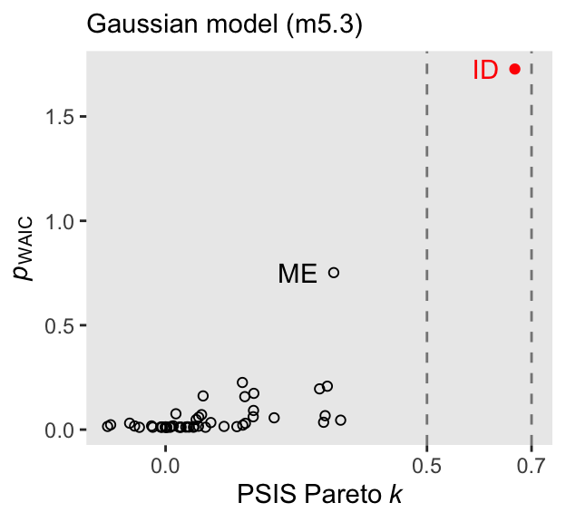
For both the Pareto \(k\) and the \(p_\text{WAIC}\), our values are not as extreme as those McElreath reported in the text. I’m not sure if this is a consequence of us using HMC or due to recent algorithmic changes for the Stan/loo teams. But at least the overall pattern is the same. Idaho is the most extreme/influential case.
In the text (p. 232), McElreath reported the effective number of parameters for b5.3 was nearly 6. We can look at this with the waic() output.
print(w5.3)
Computed from 4000 by 50 log-likelihood matrix.
Estimate SE
elpd_waic -63.8 6.4
p_waic 4.7 1.9
waic 127.6 12.7
2 (4.0%) p_waic estimates greater than 0.4. We recommend trying loo instead. Our \(p_\text{WAIC}\) was about 4.7, which is still a little high due to Idaho but not quite as high as in the text. There is some concern that Idaho is putting us at risk of overfitting due to the large influence it has on the posterior.
We can fit a Student-\(t\) model in ratan() by using the student_t() likelihood in the model block, and we can then use the student_t_lpdf() function in the generated quantities to compute the log_lik values.
# Define the `stan_data`
stan_data <- d |>
select(d, a, m) |>
compose_data()
# Define `model_code_5.3t`
model_code_5.3t <- '
data {
int<lower=1> n;
vector[n] d;
vector[n] m;
vector[n] a;
}
parameters {
real b0;
real b1;
real b2;
real<lower=0> sigma;
}
model {
vector[n] mu;
mu = b0 + b1 * m + b2 * a;
d ~ student_t(2, mu, sigma);
b0 ~ normal(0, 0.2);
b1 ~ normal(0, 0.5);
b2 ~ normal(0, 0.5);
sigma ~ exponential(1);
}
generated quantities {
vector[n] log_lik;
for (i in 1:n) log_lik[i] = student_t_lpdf(d[i] | 2, b0 + b1 * m[i] + b2 * a[i], sigma);
}
'Fit the \(t\) model with stan().
m5.3t <- stan(
data = stan_data,
model_code = model_code_5.3t,
cores = 4, seed = 5)Check the model summary.
print(m5.3t, pars = c("b0", "b1", "b2", "sigma"), probs = c(0.05, 0.945))Inference for Stan model: anon_model.
4 chains, each with iter=2000; warmup=1000; thin=1;
post-warmup draws per chain=1000, total post-warmup draws=4000.
mean se_mean sd 5% 94.5% n_eff Rhat
b0 0.02 0 0.10 -0.14 0.18 3420 1
b1 0.05 0 0.21 -0.28 0.39 3460 1
b2 -0.70 0 0.15 -0.94 -0.47 3356 1
sigma 0.58 0 0.09 0.45 0.73 3681 1
Samples were drawn using NUTS(diag_e) at Fri Aug 2 11:43:54 2024.
For each parameter, n_eff is a crude measure of effective sample size,
and Rhat is the potential scale reduction factor on split chains (at
convergence, Rhat=1).Here’s a coefficient plot for \(\beta_2\), by the two likelihoods.
bind_rows(
as_draws_df(m5.3),
as_draws_df(m5.3t)
) |>
mutate(likelihood = rep(c("Gaussian", "Student[nu==2]"), each = n() / 2)) |>
ggplot(aes(x = b2, y = likelihood)) +
stat_pointinterval(.width = 0.89, linewidth = 1/2, shape = 1) +
scale_y_discrete(NULL, expand = expansion(mult = 0.05), labels = ggplot2:::parse_safe)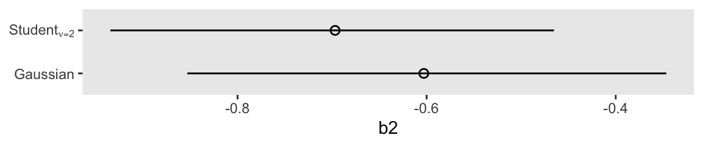
Compute and save the loo() and waic() output for the new \(t\) model.
l5.3t <- m5.3t |>
extract_log_lik() |>
loo()
w5.3t <- m5.3t |>
extract_log_lik() |>
waic()Now we might remake the plot from Figure 7.10, this time based on the \(t\) model.
d_k <- tibble(
pareto_k = l5.3t$diagnostics$pareto_k,
p_waic = w5.3t$pointwise[, "p_waic"],
Loc = pull(d, Loc))
d_k |>
ggplot(aes(x = pareto_k, y = p_waic, color = Loc == "ID")) +
geom_vline(xintercept = c(0.5, 0.7),
alpha = 1/2, color = "black", linetype = 2) +
geom_point(aes(shape = Loc == "ID")) +
geom_text(data = d_k |>
filter(Loc %in% c("ID", "ME")),
aes(label = Loc),
hjust = 1, nudge_x = -0.03) +
scale_x_continuous(expression(PSIS~Pareto~italic(k)), breaks = c(0, 0.5, 0.7)) +
scale_color_manual(values = c("black", "red")) +
scale_shape_manual(values = c(1, 19)) +
labs(y = expression(italic(p)[WAIC]),
subtitle = "Student-t model (m5.3t)") +
theme(legend.position = "none")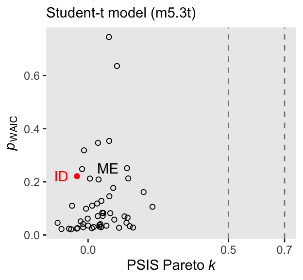
The high points in both the Pareto \(k\) and \(p_\text{WAIC}\) are much smaller, and both ID and ME are now closer to the center of the bivariate distribution. We can formally compare the two versions of the model by the LOO with the loo_compare() function.
loo_compare(l5.3, l5.3t) |> print(simplify = F) elpd_diff se_diff elpd_loo se_elpd_loo p_loo se_p_loo looic se_looic
model1 0.0 0.0 -63.9 6.4 4.8 1.9 127.8 12.9
model2 -2.5 3.0 -66.4 5.8 6.2 1.0 132.9 11.5 The standard error for the LOO difference was about the same size as the difference itself. This suggests the models were close and hard to distinguish with respect to their fit to the data. This will not always be the case.
7.5.2.1 Rethinking: The Curse of Tippecanoe.
7.6 Summary
Session info
sessionInfo()R version 4.4.0 (2024-04-24)
Platform: aarch64-apple-darwin20
Running under: macOS Ventura 13.4
Matrix products: default
BLAS: /Library/Frameworks/R.framework/Versions/4.4-arm64/Resources/lib/libRblas.0.dylib
LAPACK: /Library/Frameworks/R.framework/Versions/4.4-arm64/Resources/lib/libRlapack.dylib; LAPACK version 3.12.0
locale:
[1] en_US.UTF-8/en_US.UTF-8/en_US.UTF-8/C/en_US.UTF-8/en_US.UTF-8
time zone: America/Chicago
tzcode source: internal
attached base packages:
[1] stats graphics grDevices utils datasets methods base
other attached packages:
[1] loo_2.8.0 posterior_1.6.0 patchwork_1.2.0 rstan_2.32.6
[5] StanHeaders_2.32.7 tidybayes_3.0.6 lubridate_1.9.3 forcats_1.0.0
[9] stringr_1.5.1 dplyr_1.1.4 purrr_1.0.2 readr_2.1.5
[13] tidyr_1.3.1 tibble_3.2.1 ggplot2_3.5.1 tidyverse_2.0.0
loaded via a namespace (and not attached):
[1] shape_1.4.6.1 gtable_0.3.5 tensorA_0.36.2.1
[4] xfun_0.43 QuickJSR_1.1.3 htmlwidgets_1.6.4
[7] processx_3.8.4 inline_0.3.19 lattice_0.22-6
[10] tzdb_0.4.0 ps_1.7.6 vctrs_0.6.5
[13] tools_4.4.0 generics_0.1.3 stats4_4.4.0
[16] curl_5.2.1 parallel_4.4.0 fansi_1.0.6
[19] cmdstanr_0.8.1 pkgconfig_2.0.3 Matrix_1.7-0
[22] checkmate_2.3.1 RColorBrewer_1.1-3 distributional_0.4.0
[25] RcppParallel_5.1.7 lifecycle_1.0.4 farver_2.1.1
[28] compiler_4.4.0 munsell_0.5.1 codetools_0.2-20
[31] htmltools_0.5.8.1 yaml_2.3.8 pillar_1.9.0
[34] MASS_7.3-60.2 arrayhelpers_1.1-0 rethinking_2.40
[37] abind_1.4-5 tidyselect_1.2.1 digest_0.6.35
[40] svUnit_1.0.6 mvtnorm_1.2-5 stringi_1.8.4
[43] labeling_0.4.3 fastmap_1.1.1 grid_4.4.0
[46] colorspace_2.1-0 cli_3.6.3 magrittr_2.0.3
[49] pkgbuild_1.4.4 utf8_1.2.4 withr_3.0.0
[52] scales_1.3.0 backports_1.5.0 timechange_0.3.0
[55] rmarkdown_2.26 matrixStats_1.3.0 gridExtra_2.3
[58] hms_1.1.3 coda_0.19-4.1 evaluate_0.23
[61] knitr_1.46 V8_4.4.2 ggdist_3.3.2
[64] viridisLite_0.4.2 rlang_1.1.4 Rcpp_1.0.12
[67] glue_1.7.0 rstudioapi_0.16.0 jsonlite_1.8.8
[70] R6_2.5.1